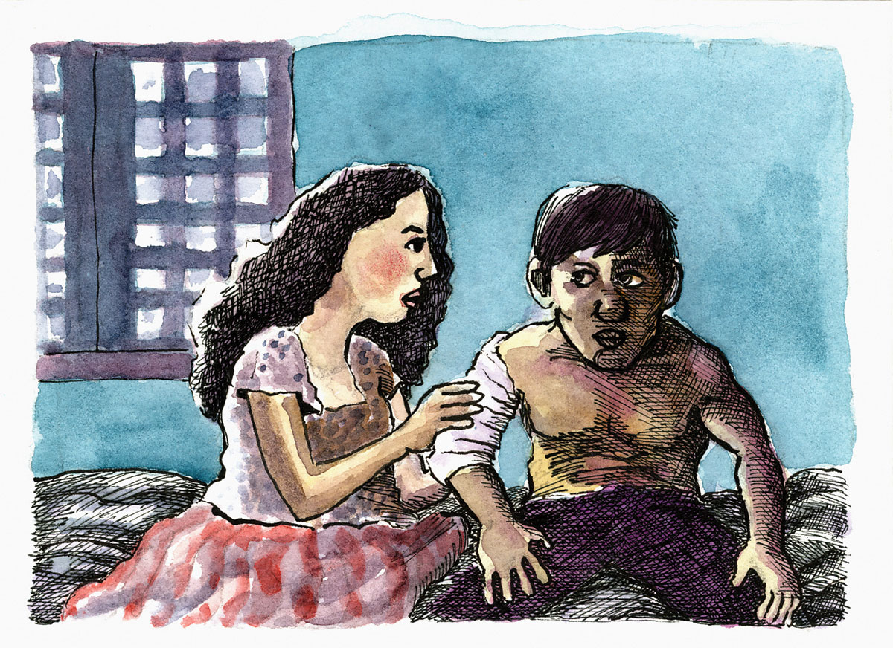
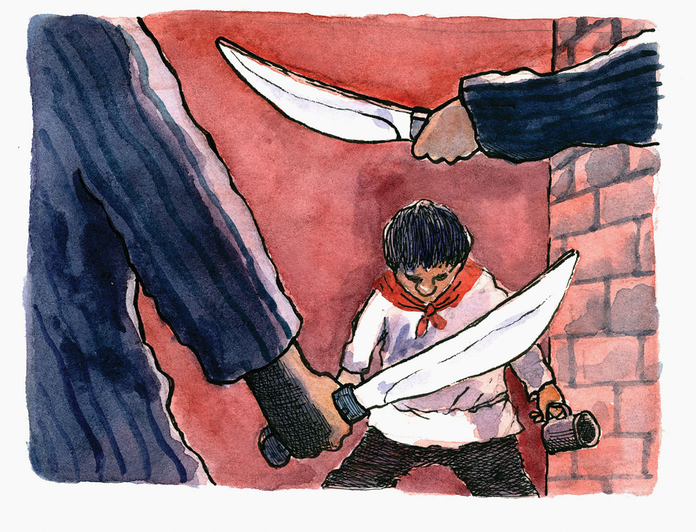

Ang Kamatayon ni Leon Kilat
Talagsaong binuhat ang nakita ni Joven sa pagbuka sa iyang mga mata. Daw birhen, daw anghel ang hitsura sa babae nga nag-atiman sa iyang mga samad sa abaga ug bukton. Taas ug taliwtiw ang iyang ilong, nipis ang iyang ngabil, taas ang buhok ug puti ang pamanit.
Niigham si Joven ug niingon, “Pasayloa ko, senyorita, apan mangutana lang unta ko kon anaa na ba ko sa langit?”
Mipahiyom ang babaye ug mitubag, “Ania ka sa balay ni Don Florencio Noel, Alkalde sa Kabkad. Ako si Beatriz, bugtong niyang anak. Nakaplagan ka ug si Heneral Pantaleon Villegas niadtong miaging adlaw sa sapa luyo sa among lagwerta. Kamong duha walay mga panimuot busa dali mo namong giamuma.”
Mitubag si Joven, “Kumosta man si Heneral, senyorita? Ug unsa man diay ta karong adlawa?” Matod ni Beatriz, “Huwebes Santo, Abril 7, 1898. Si Heneral maayo ra. Daghan og buslot agi sa bala sa riple ang iyang uniporme, apan wala gayuy tatsa o samad ang iyang kalawasan. Kahibulongan kaayo!”
Mihinayhinay pagbalik sa panumdoman ni Joven ang panghitabo sa miaging mga adlaw; ang ilang pagsulong sa Cota San Pedro nga maoy simbolo sa kagamhanang Espanya sa tibuok Sugbo. Klaro kaayo sa iyang pangisip ang duguong kumbati, ang makalilisang pinusilay ug manomano nga tinigbasay; ang hilak sa mga samaran ug himatyon; ug labi nga tataw kaayo sa alimpatakan ni Joven ang kaisog ni Heneral Villegas nga niuna pagdasdas sa mga Katsila; ang iyang way kahadlok nga pag-asdang hangtod nga siya natumba. Nagtuo si Joven nga wala na ang heneral – nadisgrasya na.
Unya sa sunod siplat niya nibangon ang heneral ug dali nga niawhag nilang tanang mga Katipunero sa pagsinggit, “Mabuhi ang Katipunan!”
Maorag kilat ang panglihok sa heneral nga nakig-away sa mga Katsila. Tukma gayud ang iyang anggà nga “Leon Kilat.”
Sa duha ka adlaw nilang pakig-engkwentro sa mga malupigon, tulo ka higayon nga nakita sa mga mata ni Joven ang pagkaigo ug pagkatumba sa heneral. Katingad-an kaayo nga nibangon ra kini ug mopadayon pakig-away. Mimando lang kini siya og atras dihang daghan kaayong mga Katsilang sundalo ang nangabot gikan sa Iloilo aron pagrelibo sa Cota San Pedro. Apan sa pag-atras nila, nihukom ang lider sa mga Katsila nga puohon gayud ang mga rebelde, busa gigukod sila ngadto sa San Nicolas unya didto na sila nagkatibulaag. Ang ubang mga Katipunero nanungas sa bukid sa Guadalupe; ang uban sa Sudlon ug Tabunan. Sila si Joven ug Heneral Villegas nipadulong sa Kabkad. Gisundan gihapon sila ug walay hunong silang giatake sa mga puwersa sa Espanya.
“Ug asa na man si Heneral, senyorita?” Pangutana ni Joven.
“Atua siya sa balay ni Don Julito Sato nagpahulay. Ang akong nahibaw-an duól na dinhi sa Kabkad ang mga sundalong Katsila nga nangita kaninyo ug daghan sila nga nagdala og mga kanyon. Makuyaw ang kahimtang kanatong tanan nga ania sa Kabkad.”
“Kon mao kana, maayo tingali nga moikyas kami ug mopauli na sa Bacong, Negros.”
Padayon nga gihaplasan ni Beatriz ang mga garas sa kalawasan ni Joven. Iyang gisukitsukit bahin sa ilang mga kaagi sa pakigbisog. Si Joven nga nadani sa kaanyag ni Beatriz walay duhaduha nga niasoy sa mga panghitabo nga ang nagsulsul mao ang ilang damgo: kagawasan sa tanang mga Pilipino. Sa taudtaod nilang kulukabildo, nahibaw-an ni Beatriz ang sekreto mahitungod sa katingalahang abilidad ni Heneral Leon Kilat – ang iyang pagkakublan adunay kalabutan sa panyong pula nga kanunay niyang gihabak sa iyang liog.
Nianang pagkagabii sa balay ni Kapitan Tiyoy Barcenilla, nagtigom ang tanang mga haligi sa lungsod ubos sa pag-awhag ni Padre Tationg Blanco. Kadaghanan nila mestiso Katsila ug bisan sila may dugong Pilipino ug gusto usab nila nga mobuwag sa Espanya, ang inahang nasod, apan dili sila gusto og kagubot. Dili nila gusto nga ang Kabkad bombahan sa mga Katsila nga moresulta sa dakong kadaot ug mokalas sa daghang mga kinabuhi. Gawas pa, sila ang mga illustrado sa lungsod; sila ang nanag-iya sa tanang katubhan ug kahumayan, kalubihan ug kamaisan; sila ang nagpatuman sa ‘obras pias’ aron matukod ang mga dagkong edipisyo dinhi. Busa, nagkahiusa silang tanan nga patyon si Leon Kilat aron ipakita sa mga Katsila nga ang Kabkad wala moalsa batok sa Espanya. Ilang isakripisyo ang kinabuhi ni Leon Kilat aron masalbar ang lungsod. Nakahibalo sila nga lisod siyang patyon apan nitaho si Don Florencio Noel nga ang anting-anting ni Leon Kilat mao ang iyang panyo nga pula sumala sa gibutyag ni Beatriz kaniya.
Pagkasunod adlaw, Biyernes Santo, ilang gipakaon ug gipainom og makahubog nga ilimnon si Leon Kilat. Pagkahubog niini, dali nilang gilabni ang iyang panyong pula, gidumog, ug gitabangan pagdunggab hangtod nga kini namatay. Gidala nila ang dugu-on ug patayng lawas ni Heneral Leon Kilat sa plasa aron ipakita sa nagsingabot nga mga Espanyol nga ang Kabkad midapig sa Espanya.
Dali nga niikyas si Joven pagkahibalo sa gidangatan sa heneral. Ug sa iyang tumang kalagot, siya mibahad: “Mga Kabkadanon, akong isaad sa lubnganan sa akong mga ginikanan nga ako mobalik ug manimalos sa inyong pagbudhi ug pagluib kang Heneral Leon Kilat! Mga tampalasang Hudas kamong tanan! Mahibaw-an ra sa tibuok kalibutan ang inyong makauuwaw nga binuhatan. Oo, mobalik ko dinhi ug papason nako sa mapà kining inyong law-ay nga lungsod!”
Sa paglabay sa mga katuigan ang Kabkad nahimong Carcar.